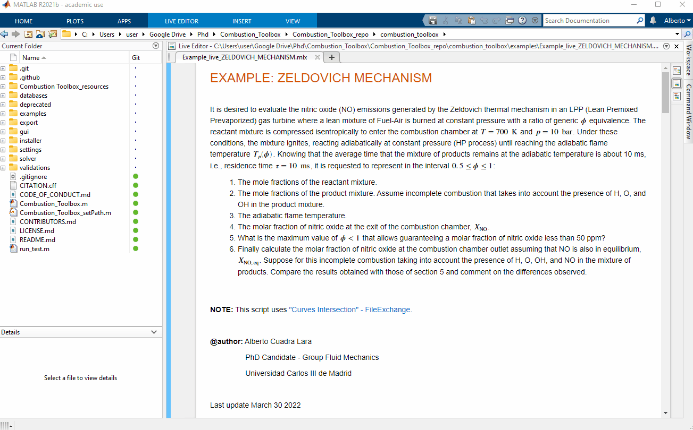

Quickstart#
Combustion toolbox can be used in two ways:
Using the MATLAB’s desktop environment to obtain all the versatility of the plain code.
Using the Graphical User Interface (GUI) and forget about code.
1. Download the code from one of the following repositories:
2. Open MATLAB with the path set to the downloaded folder
3. To install the GUI execute combustion_toolbox_app.mlappinstall in the installer folder. As simple as that.

Combustion Toolbox GUI can also be used with the MATLAB’s standalone version. In this case, proceed running combustion_toolbox_standalone_installer.exe.
To use the desktop environment (plain code) along with the GUI install the package from combustion_toolbox_package.mltbx or running INSTALL.m.